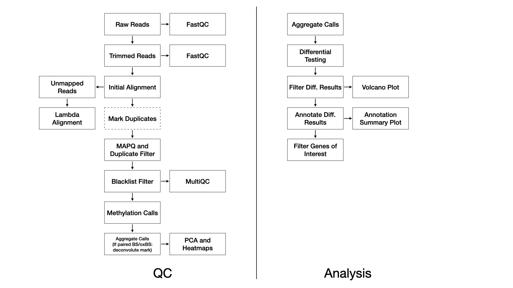

We use FastQC (FastQC) (v0.11.8) to assess the overall quality of each sequenced sample.
We use TrimGalore (@
article?{noauthor_trimgalore_nodate,) (v0.4.5)
with the following parameters:
--adapter AGATCGGAAGAGC -e 0.1 --stringency 6 --length 20 --nextseq 20,
and with the additional --rrbs flag in the ERRBS case.
Reads are aligned to the reference genome with Bismark (Krueger and Andrews, 2011) (v0.22.1) using Bowtie2 (Langmead and Salzberg, 2012) (v2.3.4) with default settings (multi-seed length of 20bp with 0 mismatches).
For WGBS, duplicate reads are marked and removed with Picard (Picard) (v2.20.2). This step is not performed for ERRBS.
Alignments below a MAPQ threshold are removed with samtools (Li et al., 2009) (v1.2) and the
parameters: -q 10.
MethylDackel (MethylDackel) (v0.4.0) then calls
methylation rates with parameters
-d 5 -D 2000 --mergeContext.
In the event of a BS/oxBS or BS/TAB library preparation, methylation mark deconvolution is then performed using the MLML2R R package (Qu et al., 2013). Briefly, methylated and unmethylated counts from bisulfite-only treated samples and oxidative-bisulfte treated samples are extracted and passed to MLML2R::MLML() to determine the levels of methylcytosine (mC), hydroxymethylcytosine (hmC), and cytosine (C) using the exact method provided in the package.